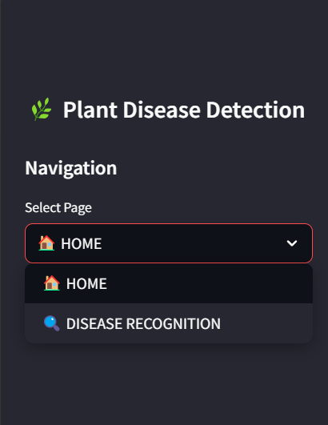
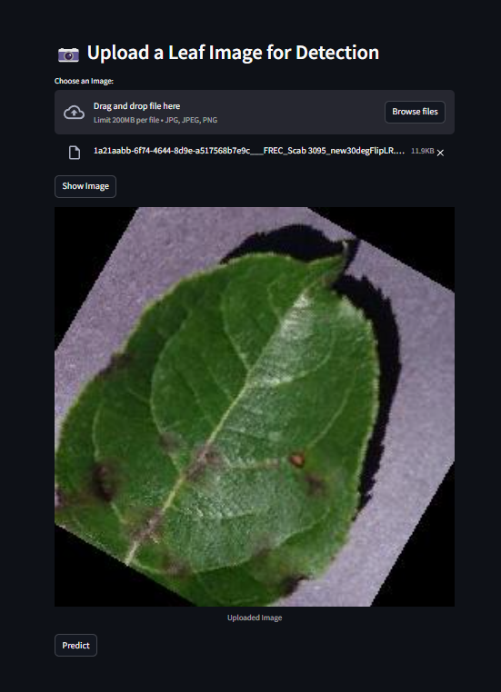
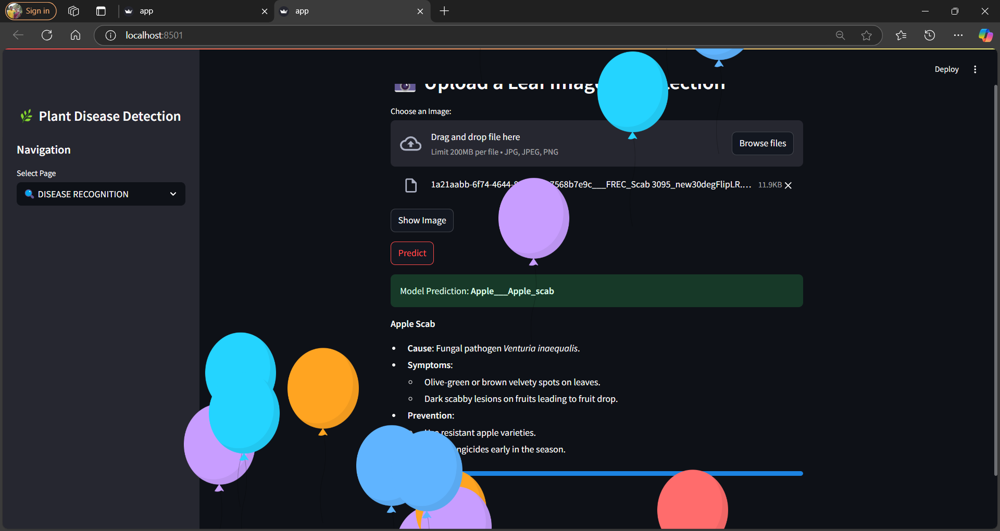
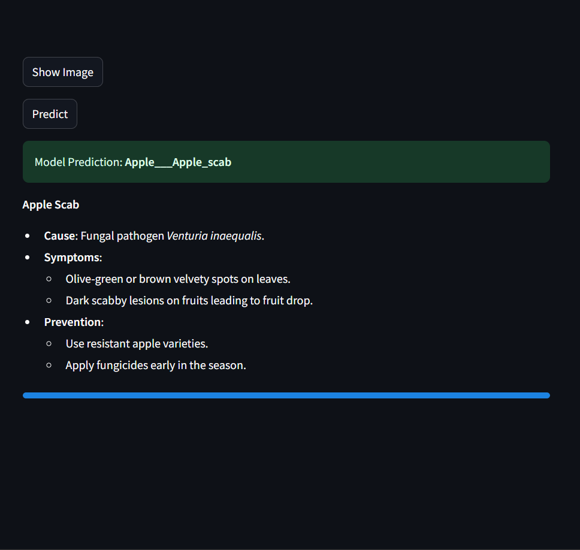
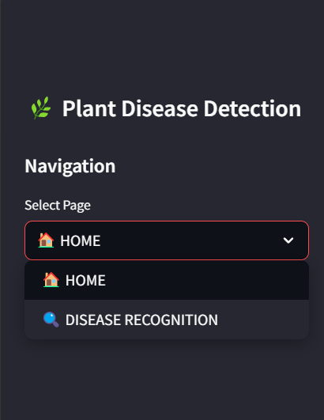
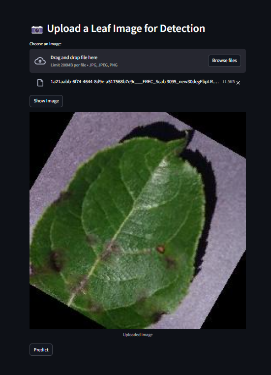
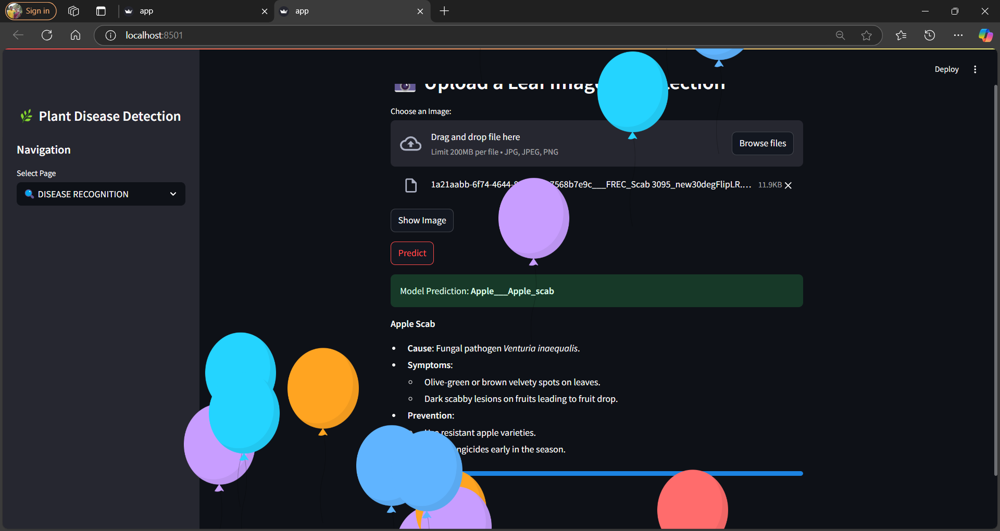
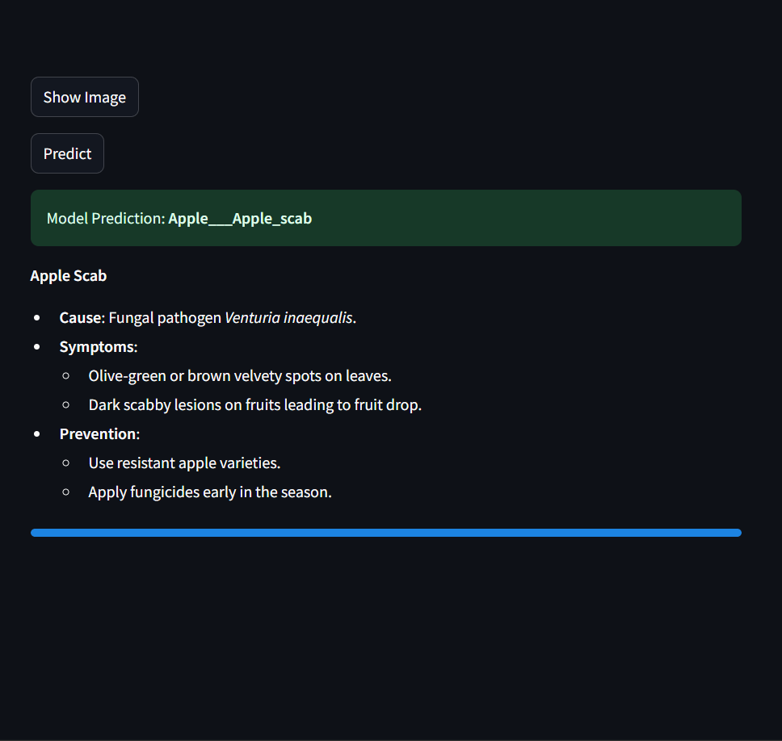

Plant Disease Detection
Uses ML image processing to detect plant diseases early.
Developed a Machine Learning model to detect plant diseases using image processing techniques. The system helps farmers identify plant infections early, improving crop health and yield.
 







GlucoSense
Machine learning model for early diabetes detection using health data to help in timely medical intervention.
View on GitHub